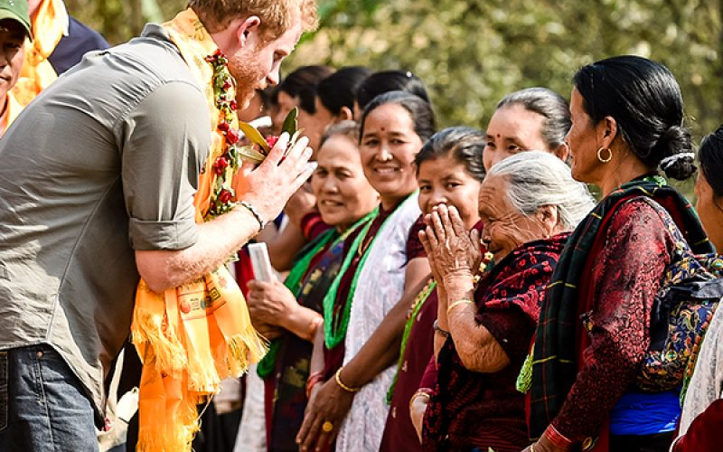

Nepal: Your Next Great Adventure Awaits! Whether you're an adrenaline junkie seeking thrilling treks through the towering peaks of the Himalayas, or a traveler looking to immerse yourself in ancient traditions, Nepal has something for everyone. Feel the rush as you hike to Everest Base Camp, conquer the Annapurna Circuit, or experience the serenity of a sunrise over the mountains. Explore bustling markets in Kathmandu, visit UNESCO World Heritage sites and lose yourself in the vibrant culture and history of this enchanting country. Nepal’s warmth, from the hospitality of its people to its awe-inspiring landscapes, ensures your adventure will be both challenging and rewarding. From the call of the wild to the peace of sacred temples, Nepal is a journey of discovery that will touch your heart and soul. Your great adventure begins here—are you ready to take the leap?
Ministry of Tourism Nepal is renowned for its heartfelt hospitality, with the cultural principle of "Atithi Devo Bhava" (the guest is God) at its core. Tourists are warmly greeted with a "Namaste," often accompanied by flower garlands, and welcomed into homes for tea or snacks. Whether trekking in the Himalayas or visiting rural villages, locals go out of their way to make visitors feel like family, offering not just services but genuine kindness. Cultural immersion, such as participating in local ceremonies or staying with families through homestays, deepens these connections. The generosity and care Nepalese people show to tourists leave lasting impressions, making every visit feel personal and special.